Data Visualisation
Tell stories with your data
Why Visualise?
- Understand patterns quickly
- Communicate findings effectively
- Identify outliers and anomalies
- Explore relationships
Scatter Plots
Show relationships between two continuous variables
Step 1: Create Basic Canvas
Start with the data and aesthetic mappings:
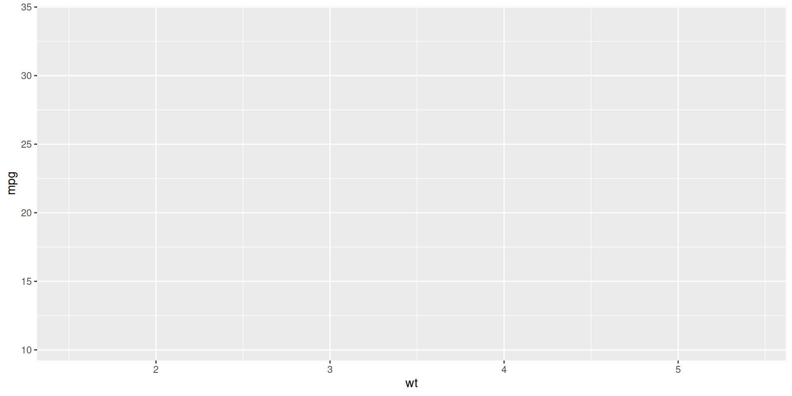Step 2: Add Points
Add points to visualise individual observations:

Step 3: Customise Points
Adjust size, transparency, and colour:
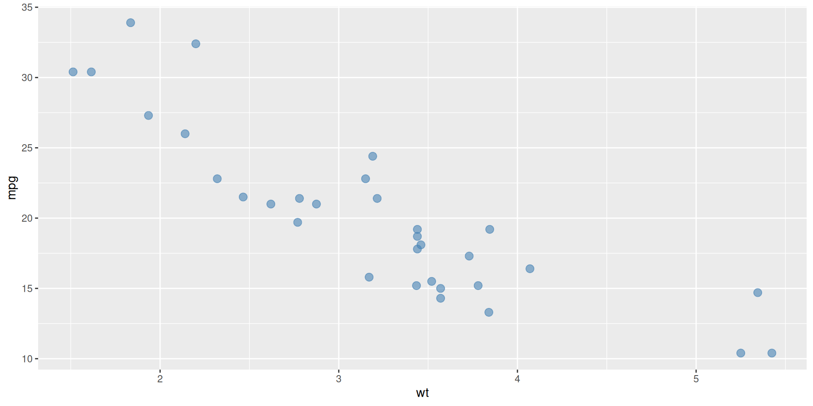Step 4: Add Trend Line
Add a smoothing layer to show the pattern:
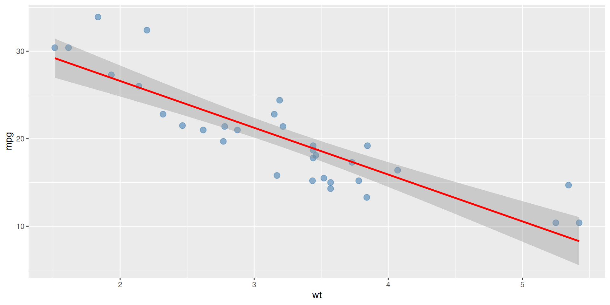Step 5: Add Labels and Theme
Make it publication-ready with titles and formatting:
# Build the complete scatter plot
scatter_plot <- ggplot(mtcars, aes(x = wt, y = mpg)) +
geom_point(size = 3, alpha = 0.6, colour = "steelblue") +
geom_smooth(method = "lm", se = TRUE, colour = "red") +
labs(
title = "Fuel Efficiency vs Weight",
subtitle = "mtcars dataset",
x = "Weight (1000 lbs)",
y = "Miles per Gallon",
caption = "Data: Henderson & Velleman (1981)"
) +
theme_minimal() +
theme(plot.title = element_text(size = 14, face = "bold"))Final Scatter Plot
View the complete publication-ready plot:
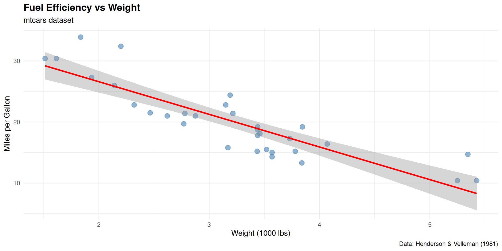Bar Plots
Show counts or comparisons across categories
Step 1: Basic Bar Plot
Create bars for each category:
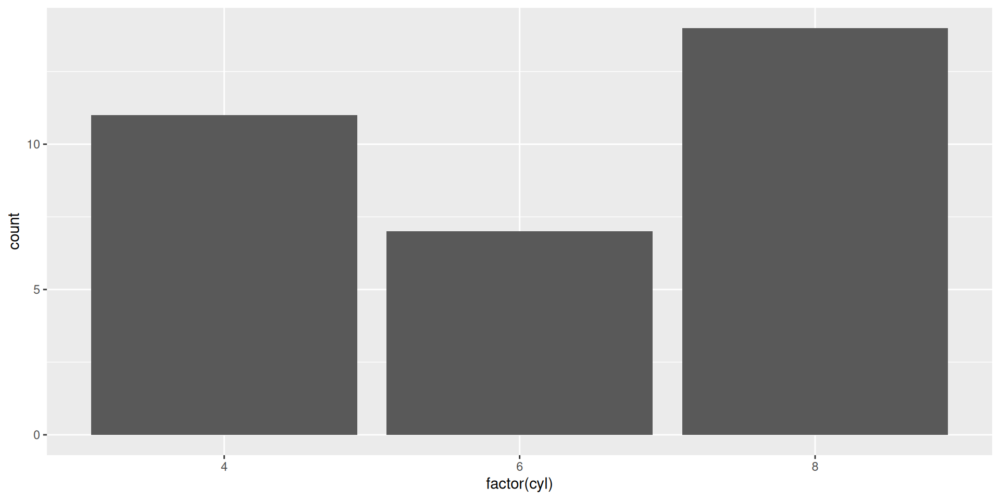Step 2: Add Colour
Customise the appearance with colours:
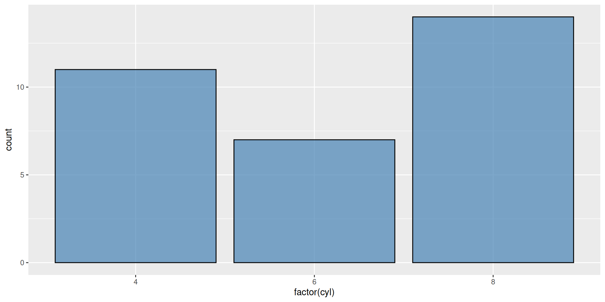Step 3: Add Labels
Add titles and axis labels:
Final Bar Plot
View the complete publication-ready plot:
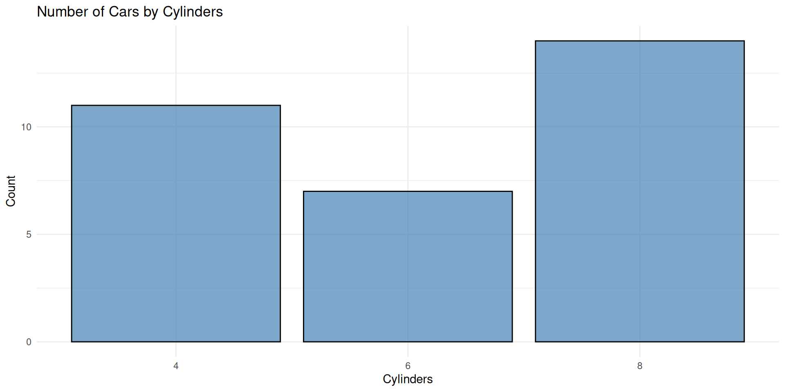Box Plots
Show distributions and identify outliers
Step 1: Basic Box Plot
Create a box plot to show distribution:
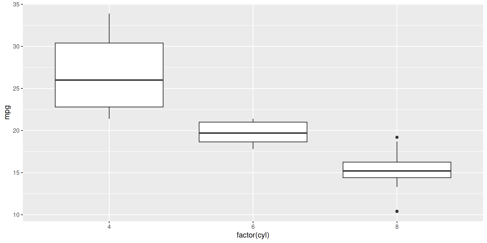Step 2: Customise Box Plot
Add colours and improve aesthetics:
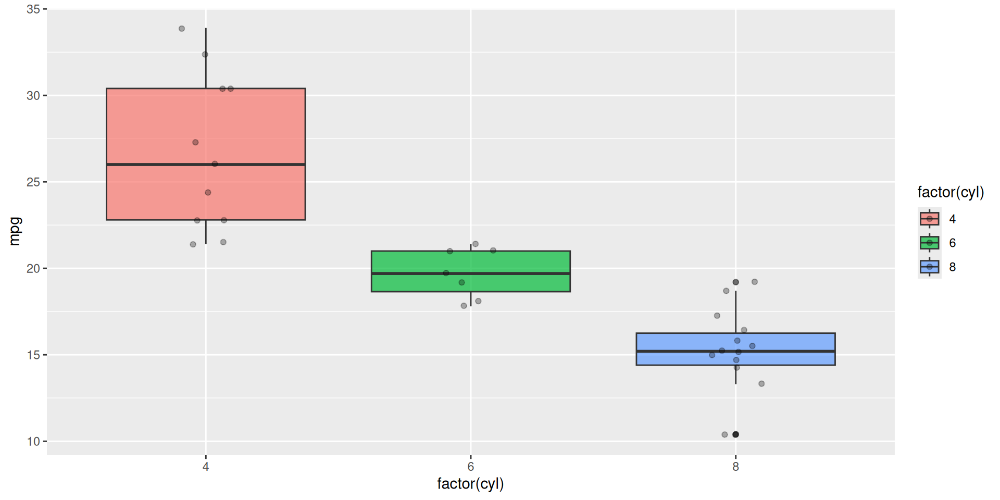Step 3: Add Labels
Make it clear and publication-ready:
# Complete box plot with labels
my_boxplot <- ggplot(mtcars, aes(x = factor(cyl), y = mpg, fill = factor(cyl))) +
geom_boxplot(alpha = 0.7) +
geom_jitter(width = 0.1, alpha = 0.3) +
labs(
title = "MPG Distribution by Number of Cylinders",
x = "Cylinders",
y = "Miles per Gallon",
fill = "Cylinders"
) +
theme_minimal() +
theme(legend.position = "bottom")Final Box Plot
View the complete publication-ready plot:
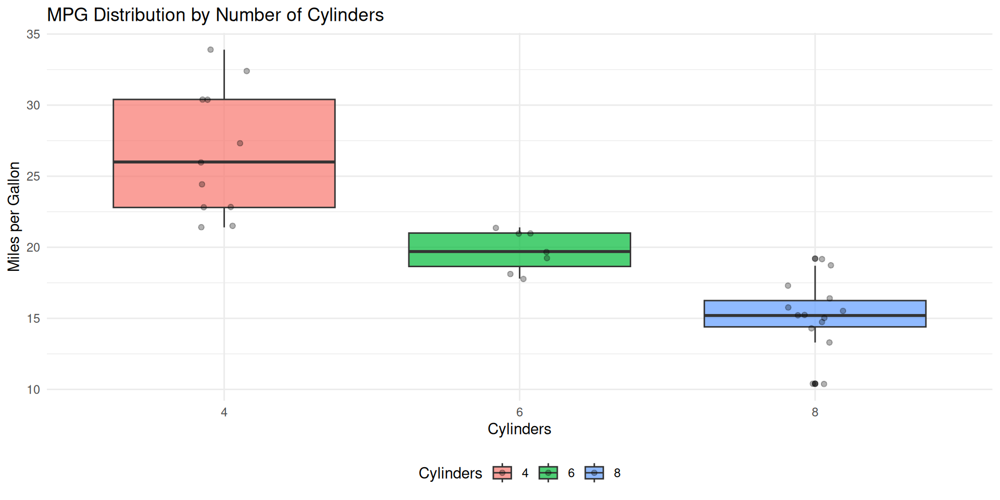Using Plots
Plots can also be assigned to objects for further modification or saving:
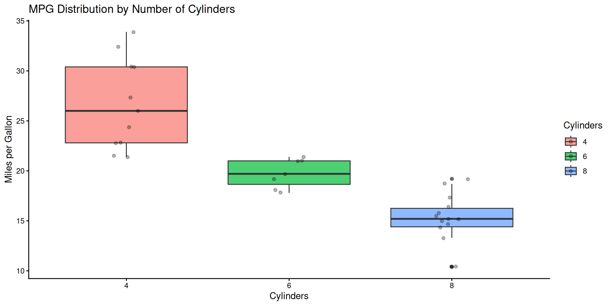Exporting Plots
You can save your plots using ggsave():
Key Resources
Key Takeaways
✅ Start with a basic canvas and build incrementally
✅ Choose the right geom for your data type
✅ Customise colours, size, and transparency strategically
✅ Add informative titles and axis labels
✅ Use themes to improve presentation
✅ Layer multiple geoms for richer visualisations
Python Content (Optional)
If you’re interested in Python, here are equivalent concepts
Scatter Plot in Python
Step-by-step construction of a scatter plot:
import matplotlib.pyplot as plt
import seaborn as sns
import pandas as pd
# Read data
df = sns.load_dataset('mpg')
# Step 1: Create figure and axis
fig, ax = plt.subplots(figsize=(10, 6))
# Step 2: Create scatter plot
ax.scatter(df['weight'], df['mpg'], s=100, alpha=0.6, color='steelblue')
# Step 3: Add labels
ax.set_xlabel('Weight')
ax.set_ylabel('Miles per Gallon')
ax.set_title('Fuel Efficiency vs Weight')
plt.grid(alpha=0.3)
plt.show()Bar Plot in Python
Create a bar plot showing counts by category:
import matplotlib.pyplot as plt
import seaborn as sns
df = sns.load_dataset('mpg')
# Create figure
fig, ax = plt.subplots(figsize=(10, 6))
# Create bar plot
df['cylinders'].value_counts().sort_index().plot(
kind='bar', ax=ax, color='steelblue', alpha=0.7
)
# Add labels
ax.set_title('Number of Cars by Cylinders')
ax.set_xlabel('Cylinders')
ax.set_ylabel('Count')
plt.show()Box Plot in Python
Show distribution and outliers with a box plot:
import matplotlib.pyplot as plt
import seaborn as sns
df = sns.load_dataset('mpg')
# Create figure
fig, ax = plt.subplots(figsize=(10, 6))
# Create box plot with individual points
sns.boxplot(data=df, x='cylinders', y='mpg', ax=ax, palette='Set2')
sns.stripplot(data=df, x='cylinders', y='mpg', ax=ax,
color='black', alpha=0.3, size=3)
# Add labels
ax.set_title('MPG Distribution by Number of Cylinders')
ax.set_xlabel('Cylinders')
ax.set_ylabel('Miles per Gallon')
plt.show()